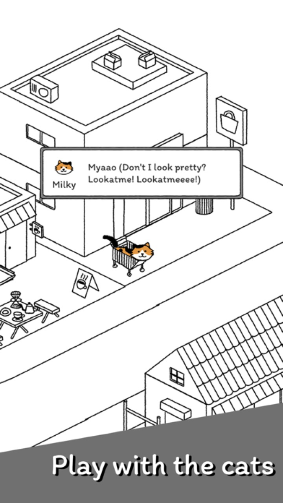

★4,9
Rating App Store


Game idle santai: kumpulkan 60+ kucing dan besarkan desamu sendiri
★4,9 · 71.000+ ulasan · 10M+ unduhan · sejak 2018
 Tiny ♥
Tiny ♥ Banhmi ♥
Banhmi ♥



Gacha kucing baru dengan tiket — Normal, Langka, dan Epik. Setiap kucing punya wajah, kebiasaan, dan sesuatu untuk dikatakan. Celotehan mereka saat naik level adalah bagian terbaiknya.

Bangunan memproduksi ikan sendiri. Beberapa menit sehari — beri makan kucing, kumpulkan hati, dan desa pun tumbuh. Iklan hanya kalau kamu mau; tidak ada yang dipaksakan.

Di desa garis tinta gambar tangan ini, satu-satunya warna adalah para kucing. Tingkatkan bangunan dan hias tiap sudut sesukamu.
Benar-benar diposting di App Store

"Benar2 seperti merawat kucing"

"Lucuuuu"

"very very cute and easy to play. i love catssss"
Sejak 2018, dirawat studio indie kecil